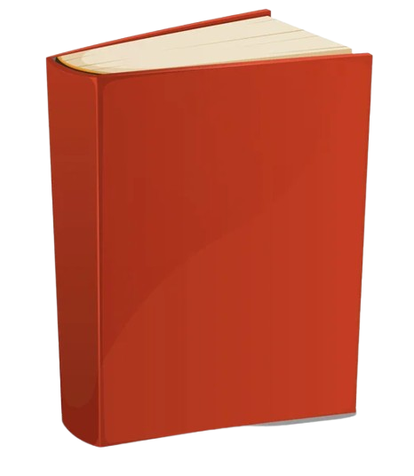

<div class="flex flex-wrap">
  <div class="w-full rounded-3xl bg-gray-800 p-6">
    <div class="mb-8 flex items-center justify-between text-white">
      <p class="text-2xl font-bold">Lista livros lidos</p>
      <div class="relative flex">
        <div class="group relative ml-8 hidden w-full items-center md:flex lg:w-72">
          <div
            class="absolute flex h-10 w-auto cursor-pointer items-center justify-center p-3 pr-2 text-sm uppercase text-gray-500 sm:hidden">
            <svg fill="none" class="relative h-5 w-5" stroke-linecap="round" stroke-linejoin="round" stroke-width="2"
              stroke="currentColor" viewBox="0 0 24 24">
              <path d="M10 14l2-2m0 0l2-2m-2 2l-2-2m2 2l2 2m7-2a9 9 0 11-18 0 9 9 0 0118 0z" />
            </svg>
          </div>
          <svg
            class="pointer-events-none absolute left-0 ml-4 hidden h-4 w-4 fill-white text-gray-100 group-hover:text-gray-400 sm:block"
            xmlns="http://www.w3.org/2000/svg" viewBox="0 0 20 20">
            <path
              d="M12.9 14.32a8 8 0 1 1 1.41-1.41l5.35 5.33-1.42 1.42-5.33-5.34zM8 14A6 6 0 1 0 8 2a6 6 0 0 0 0 12z" />
          </svg>
          <input type="text"
            class="block w-full rounded-2xl bg-gray-500 py-1.5 pl-10 pr-4 leading-normal text-gray-400 opacity-90 focus:border-transparent focus:outline-none focus:ring-2 focus:ring-blue-500"
            placeholder="Search" />
        </div>
      </div>
    </div>
    <div class="w-full  bg-gray-800 px-6 pt-6">
      <div>
        <div class="flex w-full border-t border-gray-700 p-4 hover:bg-gray-700 2xl:items-start">
          
          <div class="w-full pl-4">
            <div class="flex w-full items-center justify-between">
              <div class="font-medium text-white">Harry Potter e o Prisioneiro de Azkaban</div>
              <div class="flex w-1/6 items-center justify-center">
                <div class="flex h-7 w-7 ml-5 cursor-pointer items-center justify-center">
                  <svg viewBox="0 -0.5 21 21" version="1.1" xmlns="http://www.w3.org/2000/svg"
                    xmlns:xlink="http://www.w3.org/1999/xlink" fill="#000000">
                    <g id="SVGRepo_bgCarrier" stroke-width="0"></g>
                    <g id="SVGRepo_tracerCarrier" stroke-linecap="round" stroke-linejoin="round"></g>
                    <g id="SVGRepo_iconCarrier">
                      <title>edit_fill [#ffffff]</title>
                      <desc>Created with Sketch.</desc>
                      <defs> </defs>
                      <g id="Page-1" stroke="none" stroke-width="1" fill="none" fill-rule="evenodd">
                        <g id="Dribbble-Light-Preview" transform="translate(-59.000000, -400.000000)" fill="#ffffff">
                          <g id="icons" transform="translate(56.000000, 160.000000)">
                            <path
                              d="M3,260 L24,260 L24,258.010742 L3,258.010742 L3,260 Z M13.3341,254.032226 L9.3,254.032226 L9.3,249.950269 L19.63095,240 L24,244.115775 L13.3341,254.032226 Z"
                              id="edit_fill-[#ffffff]"> </path>
                          </g>
                        </g>
                      </g>
                    </g>
                  </svg>
                </div>
                <div class="flex h-7 w-7 ml-5 cursor-pointer items-center justify-center">
                  <svg viewBox="0 0 1024 1024" xmlns="http://www.w3.org/2000/svg" fill="#000000">
                    <g id="SVGRepo_bgCarrier" stroke-width="0"></g>
                    <g id="SVGRepo_tracerCarrier" stroke-linecap="round" stroke-linejoin="round"></g>
                    <g id="SVGRepo_iconCarrier">
                      <path fill="#ffffff"
                        d="M352 192V95.936a32 32 0 0 1 32-32h256a32 32 0 0 1 32 32V192h256a32 32 0 1 1 0 64H96a32 32 0 0 1 0-64h256zm64 0h192v-64H416v64zM192 960a32 32 0 0 1-32-32V256h704v672a32 32 0 0 1-32 32H192zm224-192a32 32 0 0 0 32-32V416a32 32 0 0 0-64 0v320a32 32 0 0 0 32 32zm192 0a32 32 0 0 0 32-32V416a32 32 0 0 0-64 0v320a32 32 0 0 0 32 32z">
                      </path>
                    </g>
                  </svg>
                </div>
                <div class="flex h-7 w-7 ml-5 cursor-pointer items-center justify-center">
                  <svg xmlns="http://www.w3.org/2000/svg" width="30" height="30" viewBox="0 0 24 24" fill="none"
                    stroke="currentColor" stroke-width="2" stroke-linecap="round" stroke-linejoin="round"
                    class="text-white">
                    <polygon
                      points="12 2 15.09 8.26 22 9.27 17 14.14 18.18 21.02 12 17.77 5.82 21.02 7 14.14 2 9.27 8.91 8.26 12 2" />
                  </svg>
                </div>
              </div>
            </div>
            <p class="my-2 text-sm text-gray-400">
              Autor: J.K. Rownling
            </p>
            <p class="my-2 text-sm text-gray-400">
              Pagina: 288
            </p>
            <p class="text-right text-sm text-gray-400">12, Janeiro - 22, Março</p>
          </div>
        </div>
      </div>
    </div>
  </div>
</div>